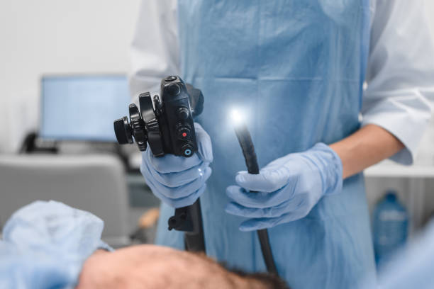
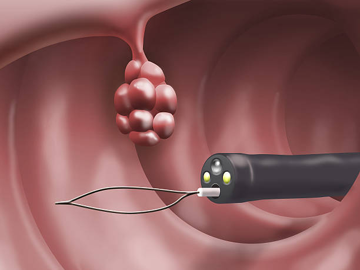

CLINIC
CONCEPT
当院では、一般内科の診療に加えて、消化器内科・内視鏡検査を専門的に行います。
胃カメラ・大腸カメラをできるだけ安心して受けていただける環境を整え、
病気の早期発見・早期治療につなげていきます。
「検査を受けたいけれど不安」「どこで検査を受ければよいかわからない」という方にも、
気軽に相談していただけるクリニックを目指します。
医学博士
日本消化器病学会専門医
日本消化器内視鏡学会専門医
肝臓学会肝臓専門医
2015年 東京大学医学部医学科 卒業
2024年 東京大学大学院医学系研究科 修了
2015年 東京新宿メディカルセンター 初期研修
2017年 日立総合病院 消化器内科
2020年 東京大学医学部附属病院 消化器内科
2025年 国立がん研究センター中央病院 内視鏡科
2026年 神戸中央病院 消化器内科
医学博士
日本内科学会 認定内科医
日本消化器病学会 消化器病専門医
日本消化器内視鏡学会 消化器内視鏡専門医
日本肝臓学会 肝臓専門医
ENDOSCOPY EQUIPMENT


MEDICAL EQUIPMENT
01
CT検査による画像診断にも対応し、 必要に応じて迅速な診断につなげます。
02
内視鏡検査後の洗浄・消毒まで含め、 安全に検査を行うための設備を整えます。
03
鎮静剤を使用した検査にも配慮し、 検査後にゆっくり休んでいただける 環境を整えます。
04
車いすをご利用の方や、 ご高齢の方にも安心して受診していただける 院内環境を目指します。
CLINIC FEATURES
検査結果や治療方針について、 できるだけわかりやすくご説明します。
検査に対する不安や負担に配慮し、 安心して検査を受けていただける環境を整えます。
消化器疾患だけでなく、 日常の体調不良や生活習慣病など、 幅広い内科診療にも対応します。
INFORMATION
| 診療時間 | 月 | 火 | 水 | 木 | 金 | 土 | 日 |
|---|---|---|---|---|---|---|---|
|
9:00〜12:00 午前外来・検査 |
● | ● | ● | ● | ● | ● | ― |
|
12:00〜15:00 内視鏡検査 |
● | ● | ● | ● | ● | ● | ― |
|
15:00〜17:30 午後外来 |
● | ● | ● | ● | ● | ● | ― |
※ 内視鏡検査は予約制です。
※ 日曜・祝日は休診です。
※ 休診日・診療時間は変更になる場合があります。
みずたに内科・内視鏡クリニック
神戸電鉄「北鈴蘭台駅」から徒歩1分
〒651-1143
兵庫県神戸市北区若葉台4丁目8-6
お車でお越しの方は、提携駐車場をご利用いただけます。
診療や内視鏡検査について、 ご不明な点がございましたらお気軽にご相談ください。